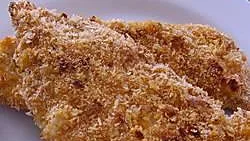

Buffalo Chicken Fingers Recipe By: Bobbi Jo

Description
This is a baked version of the super popular spicy appetizer. Use more or
less cayenne to taste.
Ingredients
- 4 skinless, boneless chicke breast halves -
cut into finger-sized pieces
- 1/4 cup of all-purpose flour
- 1 teaspoon of garlic powder
- 1 teaspoon of cayenne pepper
- 1/2 teaspoon of salt
- 3/4 cup of bread crumbs
- 2 egg whites, beaten
- 1 tablespoon of water
Steps
- Preheat oven to 400 degrees F (205 degrees C). Coat a baking sheet with
a nonstick spray.
- In a bag, mix together flour, 1/2 teaspoon garlic powder,
1/2 teaspoon cayenne pepper, and 1/4 teaspoon salt. On a plate,
mix the bread crumbs with the rest of the garlic powder, cayenne
pepper, and salt.
- Shake the chicken pieces with the seasoned flour. Beat egg whites
with 1 tablespoon water, and place egg mixture in a shallow dish or
bowl. Dip seasoned chicken in egg mixture, then roll in the seasoned
bread crumb mixture. Place on prepared baking sheet.
- Bake for about 8 minutes in the preheated oven. Use tongs to turn
pieces over. Bake 8 minutes longer, or until chicken juices run clear.